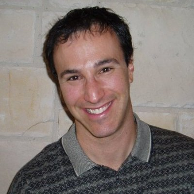
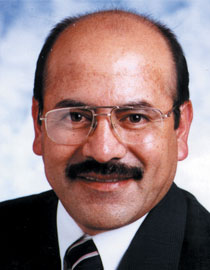
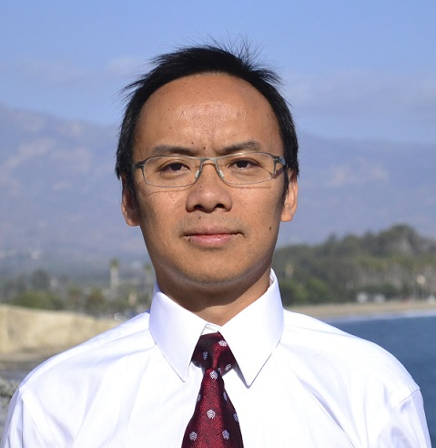

|
|
Executive Committee
Chairs
 |
Shiyan HuDepartment of Electrical and Computer Engineering Homepage |
Albert Y. ZomayaSchool of Information Technologies Homepage |
Members
|  | Charles AlpertCadence Inc. |
Gilles BetisIEEE Smart Cities Initiatives Chair Homepage |
Pascal BouvryCampus Kirchberg, Université du Luxembourg Homepage |
 |
Jörg HenkelKarlsruhe Institute of Technology Homepage |
 |
Sharon HuDeptartment of Computer Science and Engineering Homepage |
 |
Tei-Wei KuoDepartment of Computer Science and Information Engineering |
 |
Xin LiDepartment of Electrical and Computer Engineering Homepage |
|  | Jose Silva-MartinezDepartment of Electrical and Computer Engineering Homepage |
Manish ParasharDepartment of Computer Science Homepage |
Wolfgang RosenstielLehrstuhl Technische Informatik Homepage |
Rajiv RanjanCSIRO, Australia Homepage |
|  | Yuan XieDepartment of Electrical and Computer Engineering Homepage |